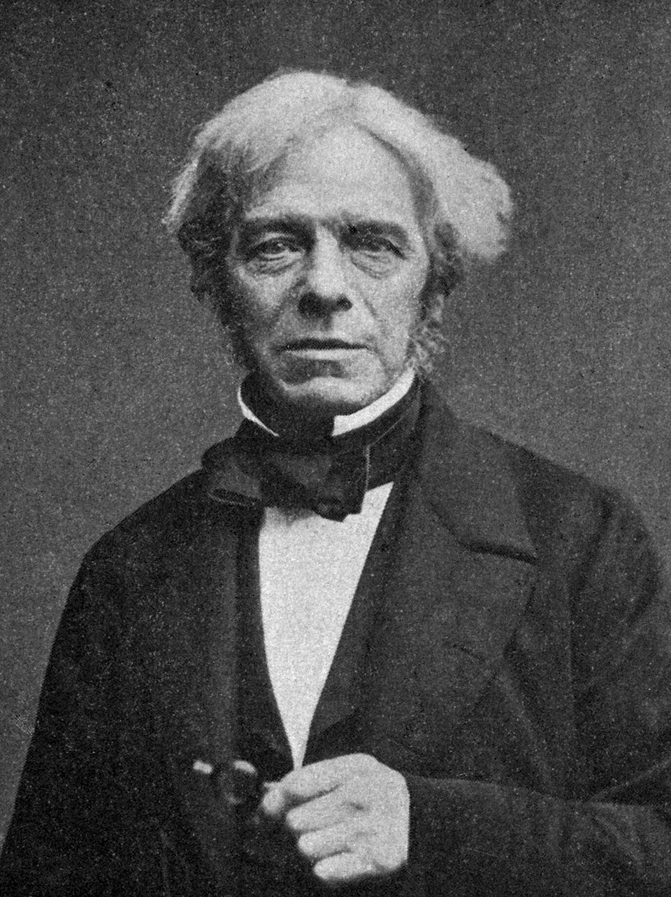
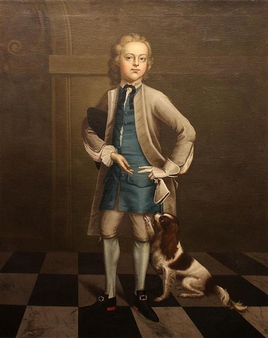
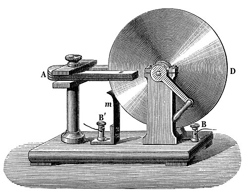
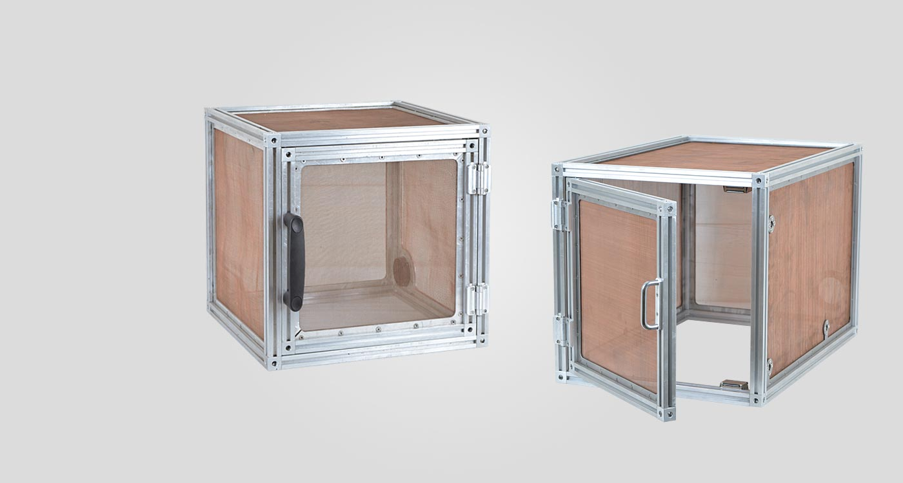

"Nothing is too wonderful to be true, if it be consistent with the laws of nature"
Michael Faraday was born on September 22 1791, in the country village of Newington, Surrey. His father was a blacksmith who had migrated from the north of England earlier in 1791 to look for work. His mother was a country woman of great calm and wisdom who supported her son emotionally through a difficult childhood.
At the age of 14, he became an apprentice to George Riebau, a local bookbinder and bookseller in Blandford Street. During his seven-year apprenticeship Faraday read many books, including Isaac Watts's The Improvement of the Mind, and he enthusiastically implemented the principles and suggestions contained therein.
A homopolar generator is a DC electrical generator comprising an electrically conductive disc or cylinder rotating in a plane perpendicular to a uniform static magnetic field.
The Faraday Cage is an apparatus that forms a protective shell around objects in order to protect them from electromagnetic fields generated by electric currents. The exterior of the cage uses conductive material to help evenly distribute electrical fields around the entire cage, while the inside remains free from any electrical interference. It is currently used in cellular technology and hospitals, such as rf blocking devices and protective suits used by individuals exposed to radiation.
Copley Medal
Royal Medal
Rumford Medal
Albert Medal
Royal Society Bakerian Medal